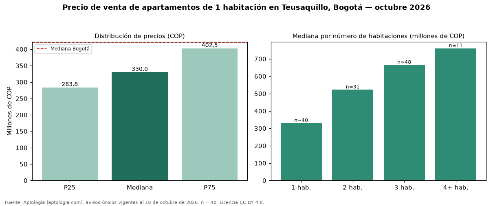

Precio de venta de apartamentos de 1 habitación en Teusaquillo, Bogotá — octubre 2026
Con 40 avisos únicos analizados, el precio mediano de apartamentos de 1 habitación en venta en Teusaquillo, Bogotá es COP 330 millones. Eso la ubica 21 % por debajo de la mediana de Bogotá para apartamentos de 1 habitación (COP 420 millones). El área mediana anunciada es 32 m² (en Bogotá: 43 m²). Cruzando con la oferta de arriendo del mismo barrio, la rentabilidad bruta implícita es de 7,5 % anual (canon por m² × 12 / precio por m²). En el mismo barrio, la mediana de apartamentos es COP 522 millones con 2 habitaciones, COP 665 millones con 3 habitaciones, COP 760 millones con 4 o más habitaciones. El estrato más frecuente en los avisos es 4. Por metro cuadrado, la mediana es COP 10 millones/m² (+3 % frente a COP 9.714.286/m² en Bogotá). Datos abiertos CC BY 4.0 de Aptología; fuente y búsqueda de inmuebles: https://www.aptologia.com/venta/bogota/teusaquillo. Archivos: PDF de 2 páginas, CSV con las cifras y gráfica PNG.

| Avisos únicos | 40 |
|---|---|
| Percentil 25 | COP 283.750.000 |
| Mediana | COP 330.000.000 |
| Percentil 75 | COP 402.500.000 |
| Mediana por m² | COP 10.000.000 |
Fuente: avisos vigentes de portales inmobiliarios recopilados por Aptología, deduplicados (mínimo 30 avisos únicos por celda). Precios pedidos, no cerrados. Fecha: 2026-10-18.